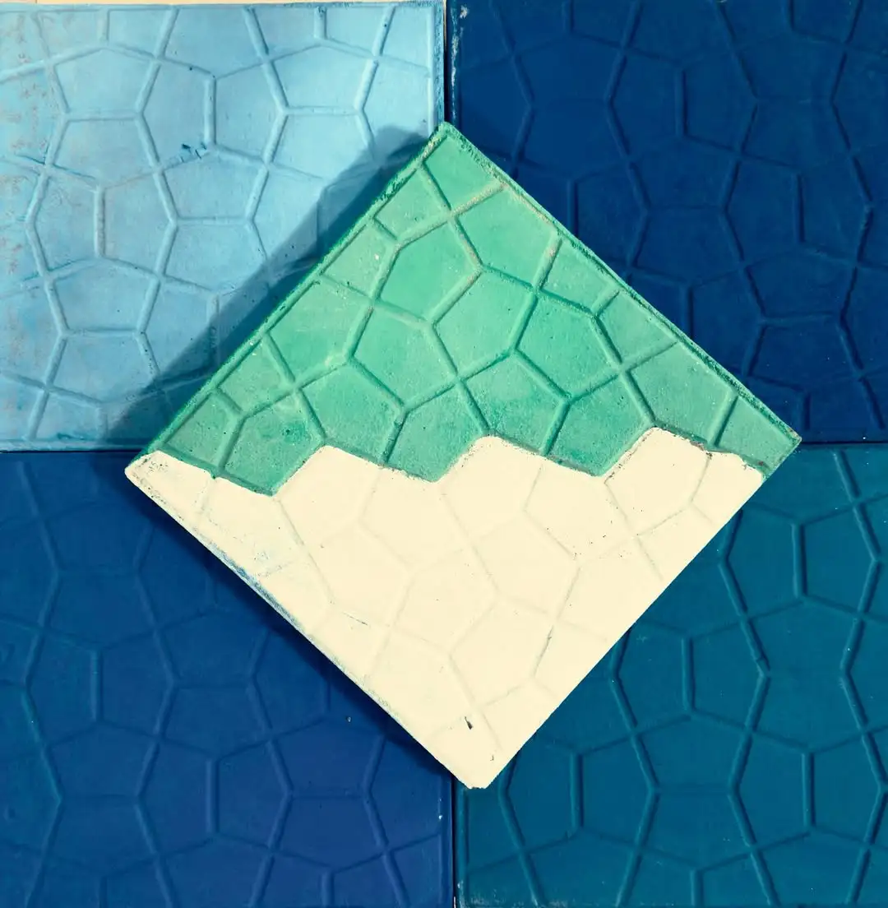
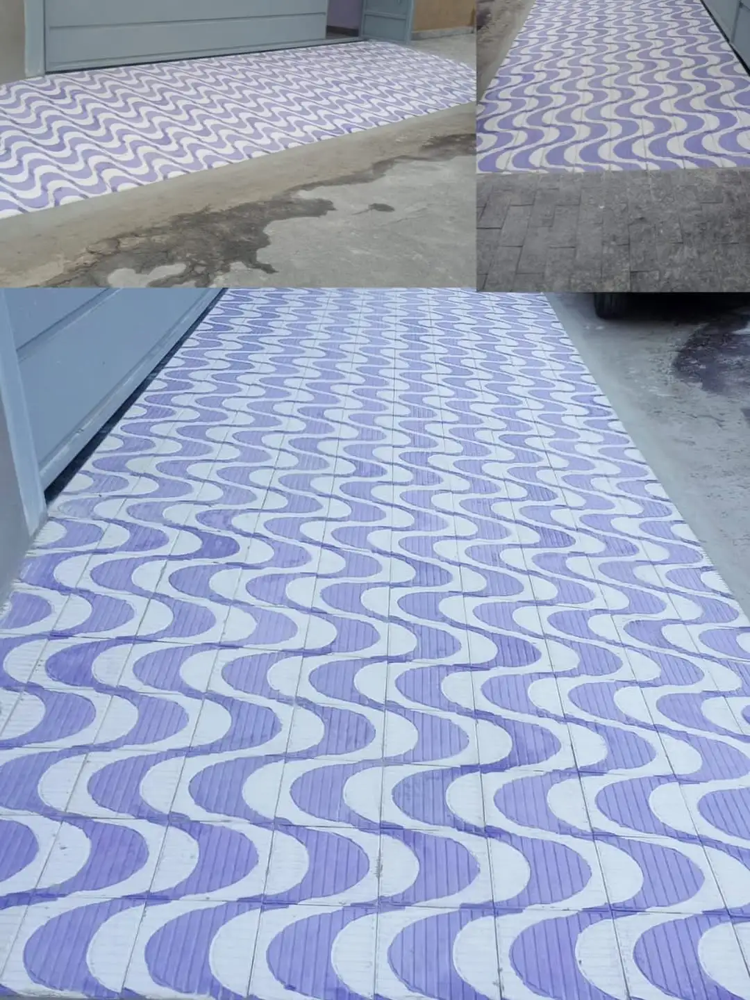
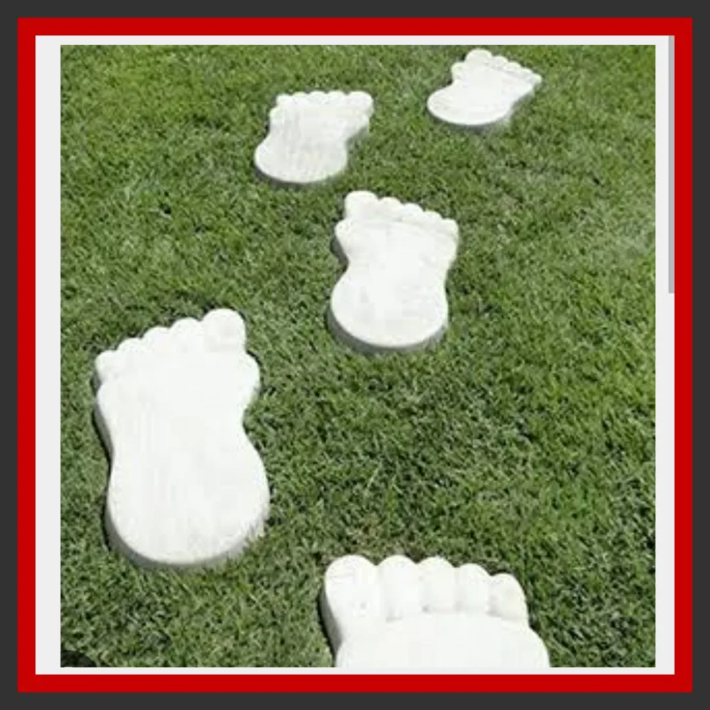

Alta resistência
Desempenho ao desgaste e à compressão para ambientes bonitos e duradouros.
Ladrilho hidráulico · Artefatos de cimento
Artesanal, geométrico e com acabamento premium
Tradição em cada peça: ladrilhos hidráulicos, cobogós, pisos para calçadas e soluções em cimento — com a precisão e a estética que seu projeto merece.
Transforme seus ambientes com a beleza e a resistência dos ladrilhos hidráulicos e dos artefatos de cimento da Incoart: produzimos peças com design artesanal, alta durabilidade e o charme que só o concreto pode oferecer — ideais para calçadas, fachadas, áreas externas e projetos decorativos.
A Incoart Artefatos de Cimento LTDA segue em Jacareí/SP com o propósito de continuar uma história de trabalho e construir um futuro sólido: em cada cliente, pedido e obra, investimos em aprendizado, dedicação e qualidade. Hoje fabricamos uma grande variedade de artefatos para obras, calçadas e áreas externas, entre eles: ladrilhos hidráulicos (incluindo aplicações em calçadas), blocos de cimento, elementos vazados e cobogós, piso podotátil de alerta e direcional, piso drenante, borda de piscina atérmica, guias e mini guias, pingadeiras, rodapés, molduras, pedras de jardim, canaletas e grelhas.
Cada peça entregue reforça nosso compromisso com qualidade, resistência e confiança — da matéria-prima ao acabamento, com atenção ao detalhe e ao DNA visual da marca.
Desempenho ao desgaste e à compressão para ambientes bonitos e duradouros.
Modelos e combinações que valorizam projetos autorais e layouts geométricos.
Opções para áreas sociais, externos, rampas e circulação — com segurança e estética.
Fabricação em cimento sem queima, alinhada a um perfil mais sustentável.
A performance do ladrilho hidráulico depende da base, do rejunte e da limpeza correta após a instalação. Orientamos sobre assentamento, dilatações e produtos adequados para conservar o brilho e a integridade das peças ao longo dos anos.
Em dúvidas sobre seu projeto, fale conosco: indicamos o melhor caminho para cada ambiente.
Tirar suas dúvidasTrês destaques da nossa linha: modelo tartaruga, ladrilho personalizado e pezão de cimento.

Clássico geométrico com forte presença visual em salas, cozinhas e áreas gourmet.
Veja mais
Desenvolvimento sob medida para o seu projeto, com a mesma qualidade artesanal.
Veja mais
Artefato robusto para bases, apoios e soluções estruturais em obra.
Veja maisPontos de revenda parceiros — telefone, WhatsApp (quando houver) e localização no mapa.
Av. Dom Pedro I, 481 — Parque dos Príncipes, Jacareí/SP
Av. Nove de Julho, 265 — Centro, Jacareí/SP
Santa Branca/SP
Incoart Artefatos de Cimento — orçamentos e atendimento pelo WhatsApp.